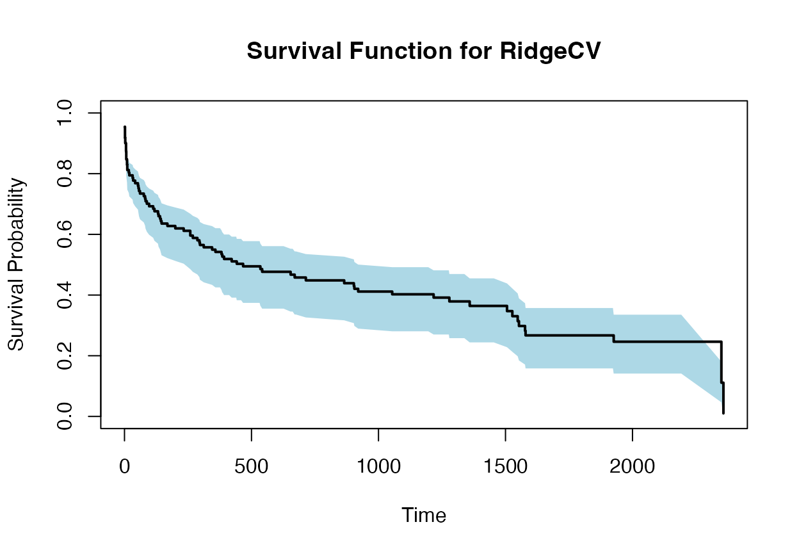
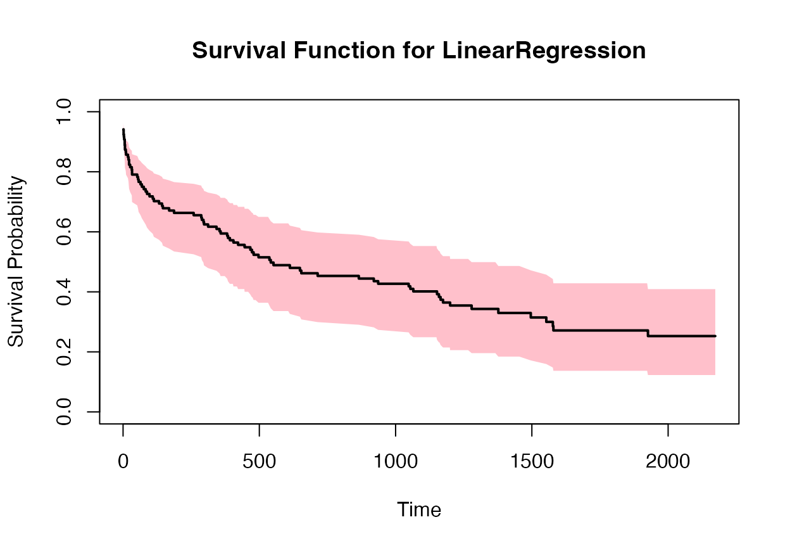
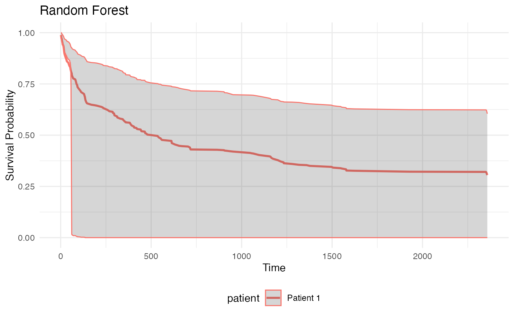
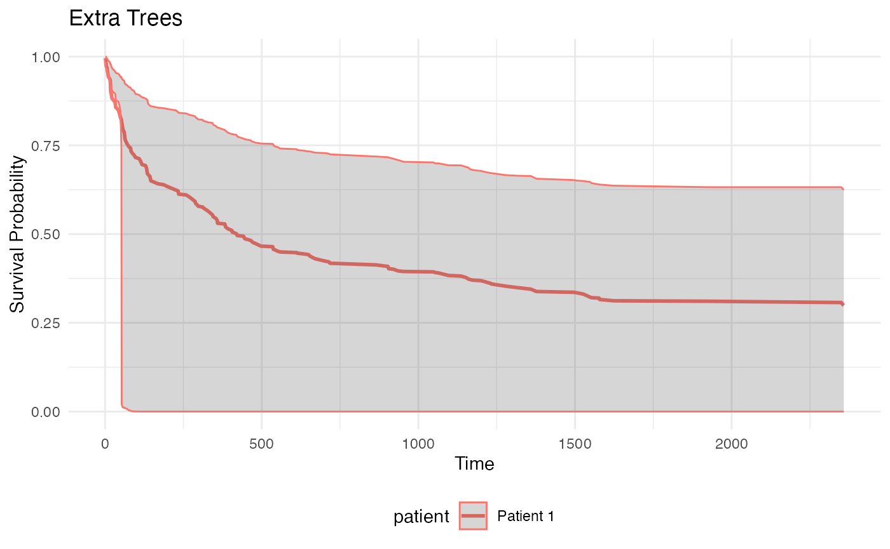

survivalist
getting-started.RmdHere, the environment is defined as ../venv for the
package to work. But in a real-world scenario, the environment is where
you want it to be.
library(survivalist)
library(reticulate)
library(ggplot2)
survivalist <- get_survivalist(venv_path = "../venv")
sklearn <- get_sklearn(venv_path = "../venv")
pd <- get_pandas(venv_path = "../venv")
load_whas500 <- survivalist$datasets$load_whas500
PIComponentwiseGenGradientBoostingSurvivalAnalysis <- survivalist$ensemble$PIComponentwiseGenGradientBoostingSurvivalAnalysis
PISurvivalCustom <- survivalist$custom$PISurvivalCustom
RidgeCV <- sklearn$linear_model$RidgeCV
LinearRegression <- sklearn$linear_model$LinearRegression
train_test_split <- sklearn$model_selection$train_test_split
# Function for one-hot encoding categorical columns
encode_categorical_columns <- function(df, categorical_columns = NULL) {
if (is.null(categorical_columns)) {
categorical_columns <- names(df)[sapply(df, is.character)]
}
df_py <- pd$get_dummies(df, columns = categorical_columns)
df_encoded <- reticulate::py_to_r(df_py)
return(df_encoded)
}
# Load data
data <- load_whas500()
X <- py_to_r(data[[1]])
y <- py_to_r(data[[2]])
# Split into training and test sets
# Perform the split in Python to avoid unnecessary conversions
split_data <- train_test_split(reticulate::r_to_py(X), reticulate::r_to_py(y), test_size = 0.2, random_state = 42L)
X_train <- split_data[[1]] # Keep X_train as a Python object
X_test <- split_data[[2]] # Keep X_test as a Python object
y_train <- split_data[[3]] # Keep y_train as a Python object
y_test <- split_data[[4]] # Keep y_test as a Python object
# Survival model
# Fit the models using Python objects directly, and specifying the type of uncertainty
estimator1 <- PIComponentwiseGenGradientBoostingSurvivalAnalysis(regr=RidgeCV(), type_pi="bootstrap")
estimator1$fit(X_train, y_train)## PIComponentwiseGenGradientBoostingSurvivalAnalysis(regr=RidgeCV(),
## type_pi='bootstrap')
estimator2 <- PIComponentwiseGenGradientBoostingSurvivalAnalysis(regr=LinearRegression(), type_pi="kde")
estimator2$fit(X_train, y_train)## PIComponentwiseGenGradientBoostingSurvivalAnalysis(type_pi='kde')
# Predict survival functions for an individual
# Use X_test as a Python object
surv_funcs <- estimator1$predict_survival_function(X_test$iloc[0:1,]) # Indexing in Python starts from 0
surv_funcs2 <- estimator2$predict_survival_function(X_test$iloc[0:1,]) # Indexing in Python starts from 0
# Extract survival function values
times <- surv_funcs$mean[[1]]$x
surv_prob <- surv_funcs$mean[[1]]$y
lower_bound <- surv_funcs$lower[[1]]$y
upper_bound <- surv_funcs$upper[[1]]$y
times2 <- surv_funcs2$mean[[1]]$x
surv_prob2 <- surv_funcs2$mean[[1]]$y
lower_bound2 <- surv_funcs2$lower[[1]]$y
upper_bound2 <- surv_funcs2$upper[[1]]$y
plot(times, surv_prob, type = "s", ylim = c(0, 1), xlab = "Time", ylab = "Survival Probability", main = "Survival Function for RidgeCV")
polygon(c(times, rev(times)), c(lower_bound, rev(upper_bound)), col = "lightblue", border = NA)
lines(times, surv_prob, type = "s", lwd = 2)
plot(times2, surv_prob2, type = "s", ylim = c(0, 1), xlab = "Time", ylab = "Survival Probability", main = "Survival Function for LinearRegression")
polygon(c(times2, rev(times2)), c(lower_bound2, rev(upper_bound2)), col = "pink", border = NA)
lines(times2, surv_prob2, type = "s", lwd = 2)
library(survivalist)
library(reticulate)
library(ggplot2)
survivalist <- get_survivalist(venv_path = "../venv")
sklearn <- get_sklearn(venv_path = "../venv")
pd <- get_pandas(venv_path = "../venv")
# Load WHAS500 dataset (replace with load_veterans_lung_cancer() for other datasets)
data <- survivalist$datasets$load_whas500()
X <- data[[1]] # Features (Python object)
y <- data[[2]] # Survival targets (Python object)
# Function to encode categorical columns (e.g., for Veterans Lung Cancer)
encode_categorical_columns <- function(df_py) {
pd$get_dummies(r_to_py(df_py)) # Convert to R, encode, return Python object
}
# Split data in Python (avoid unnecessary R conversions)
train_test_split <- sklearn$model_selection$train_test_split
split_result <- train_test_split(
X, y,
test_size = 0.2,
random_state = 42L
)
# Extract X_train, X_test, y_train, y_test (Python objects)
X_train <- split_result[[1]]
X_test <- split_result[[2]]
y_train <- split_result[[3]]
y_test <- split_result[[4]]
# Initialize and train SurvStacker models
SurvStacker <- survivalist$survstack$SurvStacker
rf_model <- SurvStacker(
clf = sklearn$ensemble$RandomForestClassifier(random_state = 42L),
type_sim = "kde",
loss = "ipcwls"
)
et_model <- SurvStacker(
clf = sklearn$ensemble$ExtraTreesClassifier(random_state = 42L),
type_sim = "kde",
loss = "ipcwls"
)
# Fit models
rf_model$fit(X_train, y_train)## <survivalist.survstack.survstacker.SurvStacker object at 0x11d0b4690>
et_model$fit(X_train, y_train)## <survivalist.survstack.survstacker.SurvStacker object at 0x11d0b4b50>
# Predict survival functions with 95% confidence intervals
surv_funcs_rf <- rf_model$predict_survival_function(X_test$iloc[10:11, ], level = 80)
surv_funcs_et <- et_model$predict_survival_function(X_test$iloc[10:11, ], level = 80)
# Convert Python survival functions to R lists
parse_surv_func <- function(surv_func) {
lapply(seq_along(py_to_r(surv_func$mean)), function(i) {
mean <- surv_func$mean[[i]]
lower <- surv_func$lower[[i]]
upper <- surv_func$upper[[i]]
data.frame(
time = unlist(mean$x),
mean = unlist(mean$y),
lower = unlist(lower$y),
upper = unlist(upper$y),
patient = paste0("Patient ", i)
)
})
}
rf_list <- parse_surv_func(surv_funcs_rf)
et_list <- parse_surv_func(surv_funcs_et)
# Plot survival curves using ggplot2
plot_survival_curves <- function(data_list, title) {
df <- do.call(rbind, data_list)
ggplot(df, aes(x = time, color = patient)) +
geom_line(aes(y = mean), size = 1) +
geom_ribbon(aes(ymin = lower, ymax = upper), alpha = 0.2) +
labs(title = title, x = "Time", y = "Survival Probability") +
theme_minimal() +
theme(legend.position = "bottom")
}
plot_survival_curves(rf_list, "Random Forest")## Warning: Using `size` aesthetic for lines was deprecated in ggplot2 3.4.0.
## ℹ Please use `linewidth` instead.
## This warning is displayed once every 8 hours.
## Call `lifecycle::last_lifecycle_warnings()` to see where this warning was
## generated.
plot_survival_curves(et_list, "Extra Trees") Intervals too large, to be examined.